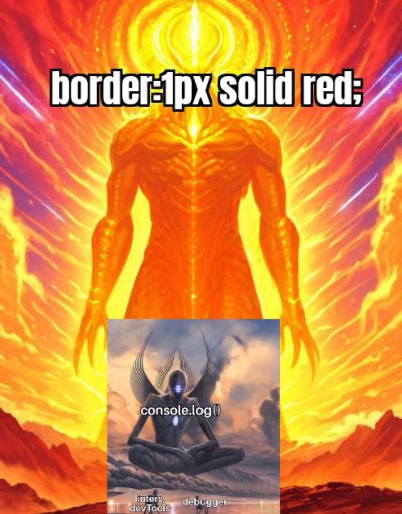

?
15
18
0.7
1.3
1
0.9
3
10
25
100


Welcome to the platformer version of my website!
Use WASD to move, Shift to sprint, and E to interact with objects, ESC to pause, and 3 for the debug menu.
Right now it's missing a lot, but I plan to make this the primary way to view my site!
Thank you for checking out my project!
Use WASD to move, Shift to sprint, and E to interact with objects, ESC to pause, and 3 for the debug menu.
Right now it's missing a lot, but I plan to make this the primary way to view my site!
Thank you for checking out my project!
Room 1
Room 2
Use W or Space to jump, and hold to jump higher!
You can also double jump!
You can also also wall jump!
Your double jump resets when you touch the ground, but not walls
You can also double jump!
You can also also wall jump!
Your double jump resets when you touch the ground, but not walls
Room 3

Use E when you see the question mark above your head to interact with objects!
This can be used to toggle switches, enter doors, or trigger any other javascript onclick code I attach to an interactable!
This can be used to toggle switches, enter doors, or trigger any other javascript onclick code I attach to an interactable!
crt
CRT Filter ON
none
CRT Filter OFF